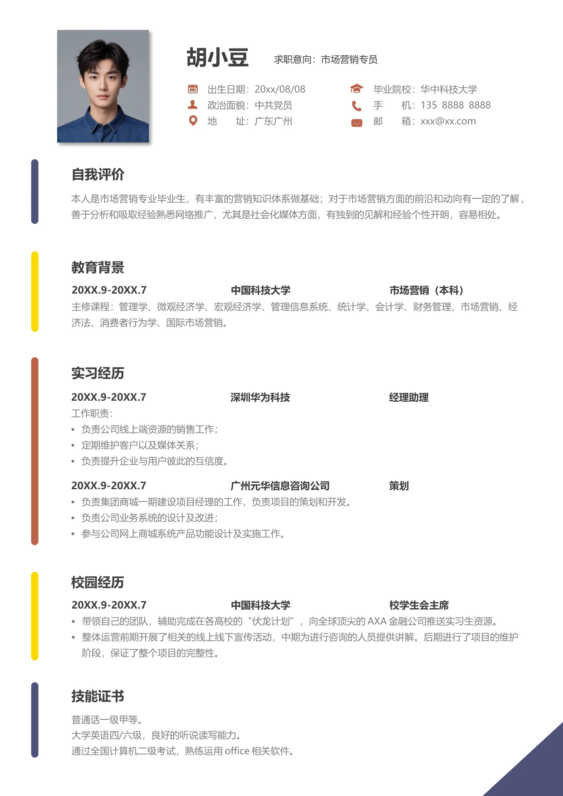

胡小豆
求职意向：市场营销专员
出生日期：20xx/08/08
政治面貌：中共党员
地 址：广东广州
毕业院校：华中科技大学
手 机：135 0000 0000
邮 箱：xxx@xx.com
本人是市场营销专业毕业生，有丰富的营销知识体系做基础；对于市场营销方面的前沿和动向有一定的了解，
善于分析和吸取经验熟悉网络推广，尤其是社会化媒体方面，有独到的见解和经验个性开朗，容易相处。
自我评价
20XX.9-20XX.7 中国科技大学 市场营销（本科）
主修课程：管理学、微观经济学、宏观经济学、管理信息系统、统计学、会计学、财务管理、市场营销、经
济法、消费者行为学、国际市场营销。
教育背景
20XX.9-20XX.7 深圳华为科技 经理助理
工作职责：
•
负责公司线上端资源的销售工作；
•
定期维护客户以及媒体关系；
•
负责提升企业与用户彼此的互信度。
20XX.9-20XX.7 广州元华信息咨询公司 策划
•
负责集团商城一期建设项目经理的工作，负责项目的策划和开发。
•
负责公司业务系统的设计及改进；
•
参与公司网上商城系统产品功能设计及实施工作。
实习经历
20XX.9-20XX.7 中国科技大学 校学生会主席
•
带领自己的团队，辅助完成在各高校的“伏龙计划”，向全球顶尖的AXA 金融公司推送实习生资源。
•
整体运营前期开展了相关的线上线下宣传活动，中期为进行咨询的人员提供讲解。后期进行了项目的维护
阶段，保证了整个项目的完整性。
校园经历
技能证书
普通话一级甲等。
大学英语四/六级，良好的听说读写能力。
通过全国计算机二级考试，熟练运用office 相关软件。